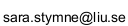

Compounds and Multiword Expressions (MWEs) - for example, nominal compounds ("frying pan"), verb-particle constructions ("take off"), and idiomatic expressions ("break the ice") - constitute a highly frequent phenomenon in natural language, yet one that provides a challenge to the traditional division between lexicon and grammar in linguistics and language technology.
The goal of this workshop is to discuss current activities and outstanding problems in the area of compounds and MWEs from a theoretical and/or applications-oriented perspective. Reports about on-going work and original research are thus equally welcome. We believe that the relevant area can be broadly structured as follows:
Note: This workshop has the support of the (organisers of the) international workshop on Multiword Expressions (see http://multiword.sourceforge.net/PHITE.php?sitesig=CONF). We would like to underline that, although both overlap contentwise, the SLTC Workshop is a locally organized event where reports about on-going work as well as completed results are equally welcome, and from which only abstracts will be published.
Submissions are invited as two-page abstracts, following the formatting guidleines of SLTC. Submissions should be emailed as a pdf-file to .
The workshop is part of SLTC, and registration is performed through the SLTC conference webpage. No separate registration is needed for the workshop. The registration deadline is October 10, 2010.
| 13.15 | Organizers | Introduction |
| 13.20 | Marion Weller and Fabienne Fritzinger | A Hybrid Approach for the Identification of Multiword Expressions |
| 13.45 | Karin Friberg Heppin | Decomposition of Compounds and the Effect on Search Key Effectiveness in Information Retrieval |
| 14.10 | Break | |
| 14.20 | Robert Östling | A Construction Grammar Method for Disambiguating Swedish Compounds |
| 14.45 | Lidia Pivovarova and Elena Yagunova | Collocation Extraction and Text Analysis: Different Types of Collocations and Different Genres |
| 15.10-15.30 | Organizers | Final session |
SLTC 2010, Linköping, Sweden.
Room: John von Neumann (map)
For travel directions, see the SLTC webpage.
Submission deadline: September 20
Notification: September 27
Registration deadline: October 10
Workshop: October 29
Magnus Merkel (LiU)
Magnus Sahlgren (SICS)
Sara Stymne (LiU)
Mats Wirén (SU)
Robert Östling (SU)
Contact: .